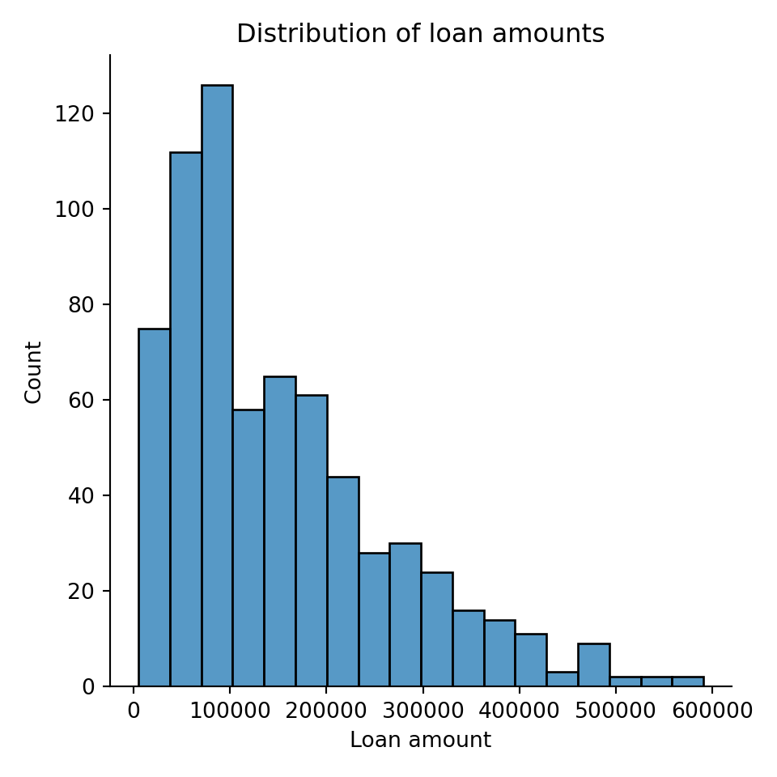
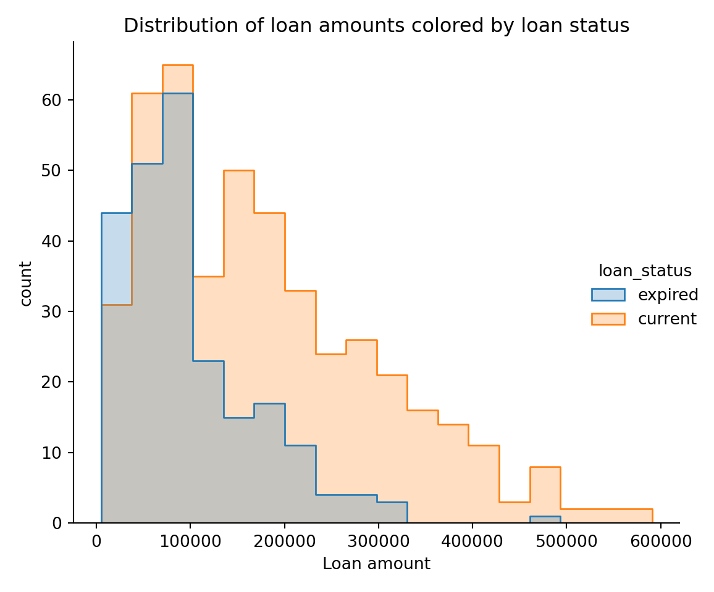
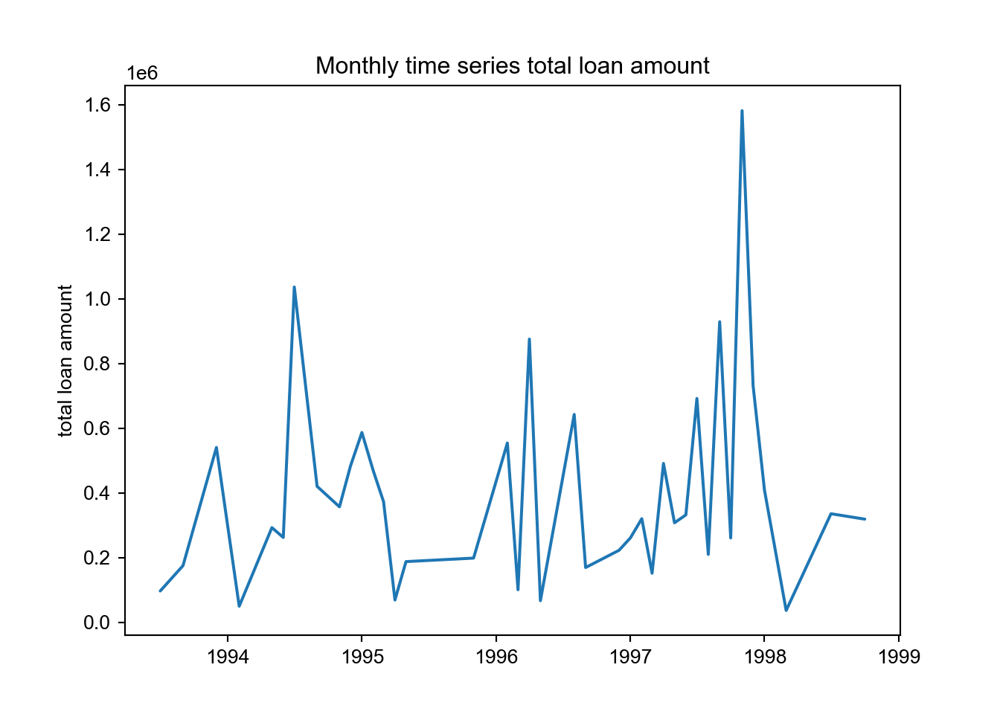

import pandas as pd
import seaborn as sns
import matplotlib.pyplot as plt
accounts_data = pd.read_csv('data/accounts_analytical.csv')
transactions_data = pd.read_csv('data/transactions.csv')## sys:1: DtypeWarning: Columns (6) have mixed types.Specify dtype option on import or set low_memory=False.accounts_data = accounts_data[~pd.isna(accounts_data['loan_date'])]
mean_bal = transactions_data.groupby('account_id')['balance'].mean().round(2).reset_index().rename(columns = {'balance' : 'avg_bank_balance'})
accounts_data = accounts_data.merge(mean_bal, how = 'left', on = 'account_id')
# make loan date
accounts_data['loan_date'] = accounts_data.loan_date.astype('datetime64[D]')
# convert to monthly period
accounts_data['loan_monthly'] = accounts_data.loan_date.dt.to_period('M')
# calculate difference between loan date and account creation date as years
accounts_data['account_loan_diff'] = (accounts_data.loan_date.astype('datetime64[D]') - accounts_data.acct_creation_date.astype('datetime64[D]')).dt.days / 365
# create monthly dataframe for time series plots
accounts_data_monthly = accounts_data[accounts_data['loan_default'] == True].groupby('loan_monthly')['loan_amount'].sum().reset_index()
accounts_data_monthly['loan_date'] = pd.PeriodIndex(accounts_data_monthly.loan_monthly).to_timestamp()The first plot shows the distribution of loan amounts
ax = sns.displot(accounts_data, x="loan_amount")
plt.title("Distribution of loan amounts")
plt.ylabel('Count')
plt.xlabel('Loan amount')
plt.tight_layout()
plt.show()
The next plot considers whether current or past loans are bigger. This will show whether the bank is taking on larger or smaller loans now.
ax = sns.displot(accounts_data, x="loan_amount", hue="loan_status", element="step")
plt.title("Distribution of loan amounts colored by loan status")
plt.ylabel('count')
plt.xlabel('Loan amount')
plt.tight_layout()
plt.show()
The next plot considers how the total loan origination has changed over time. The monthly time series plot shows the total loans given out. We see that there were three broad spikes in defaults in 1994, 1996, and 1997.
fig, ax = plt.subplots()
sns.set_style("ticks")
sns.lineplot(data=accounts_data_monthly,x="loan_date", y="loan_amount", ax=ax)
plt.title("Monthly time series total loan amount")
plt.ylabel("total loan amount")
plt.xlabel("")
plt.show()